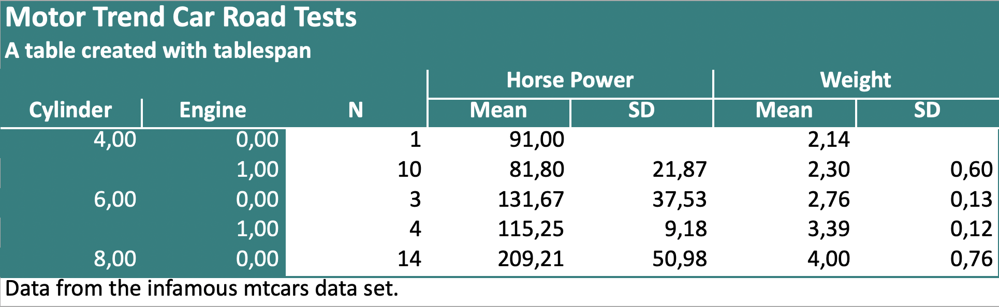
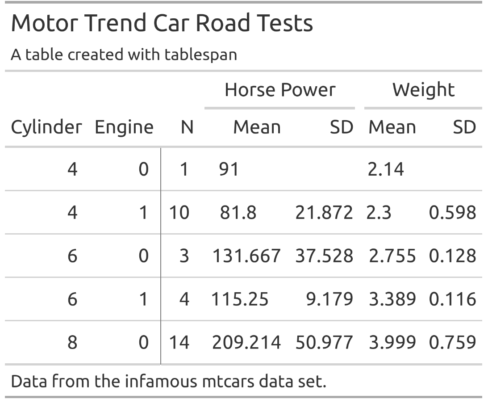
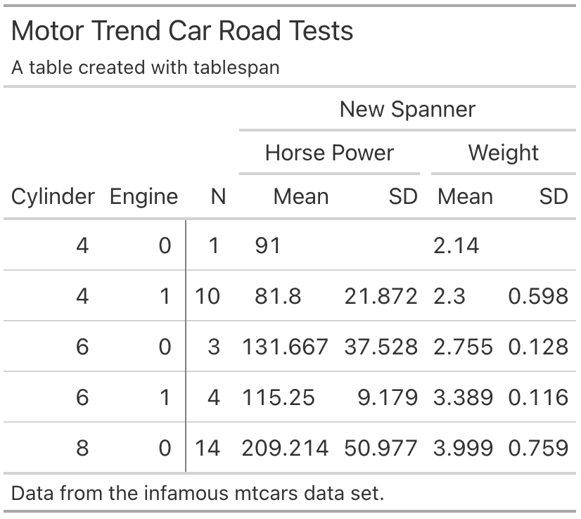

<!doctype html>
<html class="no-js" lang="en" data-content_root="./">
  <head><meta charset="utf-8"/>
    <meta name="viewport" content="width=device-width,initial-scale=1"/>
    <meta name="color-scheme" content="light dark"><meta name="viewport" content="width=device-width, initial-scale=1" />
<link rel="index" title="Index" href="genindex.html" /><link rel="search" title="Search" href="search.html" /><link rel="next" title="tablespam" href="modules.html" />

    <!-- Generated with Sphinx 8.1.3 and Furo 2024.08.06 -->
        <title>tablespam documentation</title>
      <link rel="stylesheet" type="text/css" href="_static/pygments.css?v=8f2a1f02" />
    <link rel="stylesheet" type="text/css" href="_static/styles/furo.css?v=354aac6f" />
    <link rel="stylesheet" type="text/css" href="_static/styles/furo-extensions.css?v=302659d7" />
    
    


<style>
  body {
    --color-code-background: #f8f8f8;
  --color-code-foreground: black;
  
  }
  @media not print {
    body[data-theme="dark"] {
      --color-code-background: #202020;
  --color-code-foreground: #d0d0d0;
  
    }
    @media (prefers-color-scheme: dark) {
      body:not([data-theme="light"]) {
        --color-code-background: #202020;
  --color-code-foreground: #d0d0d0;
  
      }
    }
  }
</style></head>
  <body>
    
    <script>
      document.body.dataset.theme = localStorage.getItem("theme") || "auto";
    </script>
    

<svg xmlns="http://www.w3.org/2000/svg" style="display: none;">
  <symbol id="svg-toc" viewBox="0 0 24 24">
    <title>Contents</title>
    <svg stroke="currentColor" fill="currentColor" stroke-width="0" viewBox="0 0 1024 1024">
      <path d="M408 442h480c4.4 0 8-3.6 8-8v-56c0-4.4-3.6-8-8-8H408c-4.4 0-8 3.6-8 8v56c0 4.4 3.6 8 8 8zm-8 204c0 4.4 3.6 8 8 8h480c4.4 0 8-3.6 8-8v-56c0-4.4-3.6-8-8-8H408c-4.4 0-8 3.6-8 8v56zm504-486H120c-4.4 0-8 3.6-8 8v56c0 4.4 3.6 8 8 8h784c4.4 0 8-3.6 8-8v-56c0-4.4-3.6-8-8-8zm0 632H120c-4.4 0-8 3.6-8 8v56c0 4.4 3.6 8 8 8h784c4.4 0 8-3.6 8-8v-56c0-4.4-3.6-8-8-8zM115.4 518.9L271.7 642c5.8 4.6 14.4.5 14.4-6.9V388.9c0-7.4-8.5-11.5-14.4-6.9L115.4 505.1a8.74 8.74 0 0 0 0 13.8z"/>
    </svg>
  </symbol>
  <symbol id="svg-menu" viewBox="0 0 24 24">
    <title>Menu</title>
    <svg xmlns="http://www.w3.org/2000/svg" viewBox="0 0 24 24" fill="none" stroke="currentColor"
      stroke-width="2" stroke-linecap="round" stroke-linejoin="round" class="feather-menu">
      <line x1="3" y1="12" x2="21" y2="12"></line>
      <line x1="3" y1="6" x2="21" y2="6"></line>
      <line x1="3" y1="18" x2="21" y2="18"></line>
    </svg>
  </symbol>
  <symbol id="svg-arrow-right" viewBox="0 0 24 24">
    <title>Expand</title>
    <svg xmlns="http://www.w3.org/2000/svg" viewBox="0 0 24 24" fill="none" stroke="currentColor"
      stroke-width="2" stroke-linecap="round" stroke-linejoin="round" class="feather-chevron-right">
      <polyline points="9 18 15 12 9 6"></polyline>
    </svg>
  </symbol>
  <symbol id="svg-sun" viewBox="0 0 24 24">
    <title>Light mode</title>
    <svg xmlns="http://www.w3.org/2000/svg" viewBox="0 0 24 24" fill="none" stroke="currentColor"
      stroke-width="1" stroke-linecap="round" stroke-linejoin="round" class="feather-sun">
      <circle cx="12" cy="12" r="5"></circle>
      <line x1="12" y1="1" x2="12" y2="3"></line>
      <line x1="12" y1="21" x2="12" y2="23"></line>
      <line x1="4.22" y1="4.22" x2="5.64" y2="5.64"></line>
      <line x1="18.36" y1="18.36" x2="19.78" y2="19.78"></line>
      <line x1="1" y1="12" x2="3" y2="12"></line>
      <line x1="21" y1="12" x2="23" y2="12"></line>
      <line x1="4.22" y1="19.78" x2="5.64" y2="18.36"></line>
      <line x1="18.36" y1="5.64" x2="19.78" y2="4.22"></line>
    </svg>
  </symbol>
  <symbol id="svg-moon" viewBox="0 0 24 24">
    <title>Dark mode</title>
    <svg xmlns="http://www.w3.org/2000/svg" viewBox="0 0 24 24" fill="none" stroke="currentColor"
      stroke-width="1" stroke-linecap="round" stroke-linejoin="round" class="icon-tabler-moon">
      <path stroke="none" d="M0 0h24v24H0z" fill="none" />
      <path d="M12 3c.132 0 .263 0 .393 0a7.5 7.5 0 0 0 7.92 12.446a9 9 0 1 1 -8.313 -12.454z" />
    </svg>
  </symbol>
  <symbol id="svg-sun-with-moon" viewBox="0 0 24 24">
    <title>Auto light/dark, in light mode</title>
    <svg xmlns="http://www.w3.org/2000/svg" viewBox="0 0 24 24" fill="none" stroke="currentColor"
      stroke-width="1" stroke-linecap="round" stroke-linejoin="round"
      class="icon-custom-derived-from-feather-sun-and-tabler-moon">
      <path style="opacity: 50%" d="M 5.411 14.504 C 5.471 14.504 5.532 14.504 5.591 14.504 C 3.639 16.319 4.383 19.569 6.931 20.352 C 7.693 20.586 8.512 20.551 9.25 20.252 C 8.023 23.207 4.056 23.725 2.11 21.184 C 0.166 18.642 1.702 14.949 4.874 14.536 C 5.051 14.512 5.231 14.5 5.411 14.5 L 5.411 14.504 Z"/>
      <line x1="14.5" y1="3.25" x2="14.5" y2="1.25"/>
      <line x1="14.5" y1="15.85" x2="14.5" y2="17.85"/>
      <line x1="10.044" y1="5.094" x2="8.63" y2="3.68"/>
      <line x1="19" y1="14.05" x2="20.414" y2="15.464"/>
      <line x1="8.2" y1="9.55" x2="6.2" y2="9.55"/>
      <line x1="20.8" y1="9.55" x2="22.8" y2="9.55"/>
      <line x1="10.044" y1="14.006" x2="8.63" y2="15.42"/>
      <line x1="19" y1="5.05" x2="20.414" y2="3.636"/>
      <circle cx="14.5" cy="9.55" r="3.6"/>
    </svg>
  </symbol>
  <symbol id="svg-moon-with-sun" viewBox="0 0 24 24">
    <title>Auto light/dark, in dark mode</title>
    <svg xmlns="http://www.w3.org/2000/svg" viewBox="0 0 24 24" fill="none" stroke="currentColor"
      stroke-width="1" stroke-linecap="round" stroke-linejoin="round"
      class="icon-custom-derived-from-feather-sun-and-tabler-moon">
      <path d="M 8.282 7.007 C 8.385 7.007 8.494 7.007 8.595 7.007 C 5.18 10.184 6.481 15.869 10.942 17.24 C 12.275 17.648 13.706 17.589 15 17.066 C 12.851 22.236 5.91 23.143 2.505 18.696 C -0.897 14.249 1.791 7.786 7.342 7.063 C 7.652 7.021 7.965 7 8.282 7 L 8.282 7.007 Z"/>
      <line style="opacity: 50%" x1="18" y1="3.705" x2="18" y2="2.5"/>
      <line style="opacity: 50%" x1="18" y1="11.295" x2="18" y2="12.5"/>
      <line style="opacity: 50%" x1="15.316" y1="4.816" x2="14.464" y2="3.964"/>
      <line style="opacity: 50%" x1="20.711" y1="10.212" x2="21.563" y2="11.063"/>
      <line style="opacity: 50%" x1="14.205" y1="7.5" x2="13.001" y2="7.5"/>
      <line style="opacity: 50%" x1="21.795" y1="7.5" x2="23" y2="7.5"/>
      <line style="opacity: 50%" x1="15.316" y1="10.184" x2="14.464" y2="11.036"/>
      <line style="opacity: 50%" x1="20.711" y1="4.789" x2="21.563" y2="3.937"/>
      <circle style="opacity: 50%" cx="18" cy="7.5" r="2.169"/>
    </svg>
  </symbol>
  <symbol id="svg-pencil" viewBox="0 0 24 24">
    <svg xmlns="http://www.w3.org/2000/svg" viewBox="0 0 24 24" fill="none" stroke="currentColor"
      stroke-width="1" stroke-linecap="round" stroke-linejoin="round" class="icon-tabler-pencil-code">
      <path d="M4 20h4l10.5 -10.5a2.828 2.828 0 1 0 -4 -4l-10.5 10.5v4" />
      <path d="M13.5 6.5l4 4" />
      <path d="M20 21l2 -2l-2 -2" />
      <path d="M17 17l-2 2l2 2" />
    </svg>
  </symbol>
  <symbol id="svg-eye" viewBox="0 0 24 24">
    <svg xmlns="http://www.w3.org/2000/svg" viewBox="0 0 24 24" fill="none" stroke="currentColor"
      stroke-width="1" stroke-linecap="round" stroke-linejoin="round" class="icon-tabler-eye-code">
      <path stroke="none" d="M0 0h24v24H0z" fill="none" />
      <path d="M10 12a2 2 0 1 0 4 0a2 2 0 0 0 -4 0" />
      <path
        d="M11.11 17.958c-3.209 -.307 -5.91 -2.293 -8.11 -5.958c2.4 -4 5.4 -6 9 -6c3.6 0 6.6 2 9 6c-.21 .352 -.427 .688 -.647 1.008" />
      <path d="M20 21l2 -2l-2 -2" />
      <path d="M17 17l-2 2l2 2" />
    </svg>
  </symbol>
</svg>

<input type="checkbox" class="sidebar-toggle" name="__navigation" id="__navigation">
<input type="checkbox" class="sidebar-toggle" name="__toc" id="__toc">
<label class="overlay sidebar-overlay" for="__navigation">
  <div class="visually-hidden">Hide navigation sidebar</div>
</label>
<label class="overlay toc-overlay" for="__toc">
  <div class="visually-hidden">Hide table of contents sidebar</div>
</label>

<a class="skip-to-content muted-link" href="#furo-main-content">Skip to content</a>


<div class="page">
  <header class="mobile-header">
    <div class="header-left">
      <label class="nav-overlay-icon" for="__navigation">
        <div class="visually-hidden">Toggle site navigation sidebar</div>
        <i class="icon"><svg><use href="#svg-menu"></use></svg></i>
      </label>
    </div>
    <div class="header-center">
      <a href="#"><div class="brand">tablespam  documentation</div></a>
    </div>
    <div class="header-right">
      <div class="theme-toggle-container theme-toggle-header">
        <button class="theme-toggle">
          <div class="visually-hidden">Toggle Light / Dark / Auto color theme</div>
          <svg class="theme-icon-when-auto-light"><use href="#svg-sun-with-moon"></use></svg>
          <svg class="theme-icon-when-auto-dark"><use href="#svg-moon-with-sun"></use></svg>
          <svg class="theme-icon-when-dark"><use href="#svg-moon"></use></svg>
          <svg class="theme-icon-when-light"><use href="#svg-sun"></use></svg>
        </button>
      </div>
      <label class="toc-overlay-icon toc-header-icon" for="__toc">
        <div class="visually-hidden">Toggle table of contents sidebar</div>
        <i class="icon"><svg><use href="#svg-toc"></use></svg></i>
      </label>
    </div>
  </header>
  <aside class="sidebar-drawer">
    <div class="sidebar-container">
      
      <div class="sidebar-sticky"><a class="sidebar-brand" href="#">
  
  
  <span class="sidebar-brand-text">tablespam  documentation</span>
  
</a><form class="sidebar-search-container" method="get" action="search.html" role="search">
  <input class="sidebar-search" placeholder="Search" name="q" aria-label="Search">
  <input type="hidden" name="check_keywords" value="yes">
  <input type="hidden" name="area" value="default">
</form>
<div id="searchbox"></div><div class="sidebar-scroll"><div class="sidebar-tree">
  <p class="caption" role="heading"><span class="caption-text">Contents:</span></p>
<ul>
<li class="toctree-l1 has-children"><a class="reference internal" href="modules.html">tablespam</a><input class="toctree-checkbox" id="toctree-checkbox-1" name="toctree-checkbox-1" role="switch" type="checkbox"/><label for="toctree-checkbox-1"><div class="visually-hidden">Toggle navigation of tablespam</div><i class="icon"><svg><use href="#svg-arrow-right"></use></svg></i></label><ul>
<li class="toctree-l2 has-children"><a class="reference internal" href="tablespam.html">tablespam package</a><input class="toctree-checkbox" id="toctree-checkbox-2" name="toctree-checkbox-2" role="switch" type="checkbox"/><label for="toctree-checkbox-2"><div class="visually-hidden">Toggle navigation of tablespam package</div><i class="icon"><svg><use href="#svg-arrow-right"></use></svg></i></label><ul>
<li class="toctree-l3"><a class="reference internal" href="tablespam.Excel.html">tablespam.Excel package</a></li>
<li class="toctree-l3"><a class="reference internal" href="tablespam.GT.html">tablespam.GT package</a></li>
</ul>
</li>
</ul>
</li>
</ul>

</div>
</div>

      </div>
      
    </div>
  </aside>
  <div class="main">
    <div class="content">
      <div class="article-container">
        <a href="#" class="back-to-top muted-link">
          <svg xmlns="http://www.w3.org/2000/svg" viewBox="0 0 24 24">
            <path d="M13 20h-2V8l-5.5 5.5-1.42-1.42L12 4.16l7.92 7.92-1.42 1.42L13 8v12z"></path>
          </svg>
          <span>Back to top</span>
        </a>
        <div class="content-icon-container">
          <div class="view-this-page">
  <a class="muted-link" href="_sources/index.rst.txt" title="View this page">
    <svg><use href="#svg-eye"></use></svg>
    <span class="visually-hidden">View this page</span>
  </a>
</div>
<div class="theme-toggle-container theme-toggle-content">
            <button class="theme-toggle">
              <div class="visually-hidden">Toggle Light / Dark / Auto color theme</div>
              <svg class="theme-icon-when-auto-light"><use href="#svg-sun-with-moon"></use></svg>
              <svg class="theme-icon-when-auto-dark"><use href="#svg-moon-with-sun"></use></svg>
              <svg class="theme-icon-when-dark"><use href="#svg-moon"></use></svg>
              <svg class="theme-icon-when-light"><use href="#svg-sun"></use></svg>
            </button>
          </div>
          <label class="toc-overlay-icon toc-content-icon" for="__toc">
            <div class="visually-hidden">Toggle table of contents sidebar</div>
            <i class="icon"><svg><use href="#svg-toc"></use></svg></i>
          </label>
        </div>
        <article role="main" id="furo-main-content">
          <!-- The README.md is generated automatically from README.qmd
&#10;To render the README.qmd file, the following actions are required:
&#10;- install quarto from https://quarto.org/docs/get-started/
- install R and the package reticulate
- install jupyter notebooks
- render the README.qmd
-->
<section id="tablespam-simple-tables-made-simple">
<h1>Tablespam - Simple Tables Made Simple<a class="headerlink" href="#tablespam-simple-tables-made-simple" title="Link to this heading">¶</a></h1>
<!-- badges: start -->
<p><a class="reference external" href="https://lifecycle.r-lib.org/articles/stages.html#experimental"></a></p>
<!-- badges: end -->
<p>The objective of <code class="docutils literal notranslate"><span class="pre">tablespam</span></code> is to provide a “good enough” approach to
creating tables in python. <code class="docutils literal notranslate"><span class="pre">tablespam</span></code> is a port of the R package
<a class="reference external" href="https://jhorzek.github.io/tablespan/"><code class="docutils literal notranslate"><span class="pre">tablespan</span></code></a>.</p>
<p><code class="docutils literal notranslate"><span class="pre">tablespam</span></code> currently builds on the awesome package
<a class="reference external" href="https://posit-dev.github.io/great-tables/articles/intro.html"><code class="docutils literal notranslate"><span class="pre">great_tables</span></code></a>,
which allows tables created with <code class="docutils literal notranslate"><span class="pre">tablespam</span></code> to be exported to the
following formats:</p>
<ul class="simple">
<li><p><strong>Excel</strong> (using
<a class="reference external" href="https://openpyxl.readthedocs.io/en/stable/"><code class="docutils literal notranslate"><span class="pre">openpyxl</span></code></a>)</p></li>
<li><p><strong>HTML</strong> (using
<a class="reference external" href="https://posit-dev.github.io/great-tables/articles/intro.html"><code class="docutils literal notranslate"><span class="pre">great_tables</span></code></a>)</p></li>
<li><p><strong>LaTeX</strong> (using
<a class="reference external" href="https://posit-dev.github.io/great-tables/articles/intro.html"><code class="docutils literal notranslate"><span class="pre">great_tables</span></code></a>)</p></li>
<li><p><strong>RTF</strong> (using
<a class="reference external" href="https://posit-dev.github.io/great-tables/articles/intro.html"><code class="docutils literal notranslate"><span class="pre">great_tables</span></code></a>)</p></li>
</ul>
<section id="installation">
<h2>Installation<a class="headerlink" href="#installation" title="Link to this heading">¶</a></h2>
<p><code class="docutils literal notranslate"><span class="pre">tablespam</span></code> is available from pip:</p>
<div class="highlight-none notranslate"><div class="highlight"><pre><span></span>pip install tablespam
</pre></div>
</div>
<p>To install the development version from GitHub, run:</p>
<div class="highlight-none notranslate"><div class="highlight"><pre><span></span>pip install git+https://github.com/jhorzek/tablespam.git#egg=tablespam
</pre></div>
</div>
</section>
<section id="introduction">
<h2>Introduction<a class="headerlink" href="#introduction" title="Link to this heading">¶</a></h2>
<p>Python has a large set of great packages that allow you to create and
export tables that look exactly like you envisioned. However, sometimes
you may just need a good-enough table that is easy to create and share
with others. This is where <code class="docutils literal notranslate"><span class="pre">tablespam</span></code> can be of help.</p>
<p>Let’s assume that we want to share the following table:</p>
<div class="highlight-python notranslate"><div class="highlight"><pre><span></span><span class="kn">import</span><span class="w"> </span><span class="nn">polars</span><span class="w"> </span><span class="k">as</span><span class="w"> </span><span class="nn">pl</span>
<span class="kn">from</span><span class="w"> </span><span class="nn">tablespam.Data.mtcars</span><span class="w"> </span><span class="kn">import</span> <span class="n">mtcars</span>

<span class="c1"># Import mtcars data from R:</span>
<span class="n">cars</span> <span class="o">=</span> <span class="n">mtcars</span><span class="p">()</span>

<span class="n">summarized_table</span> <span class="o">=</span> <span class="n">cars</span><span class="o">.</span><span class="n">group_by</span><span class="p">([</span><span class="s1">&#39;cyl&#39;</span><span class="p">,</span> <span class="s1">&#39;vs&#39;</span><span class="p">],</span>
                                  <span class="n">maintain_order</span><span class="o">=</span><span class="kc">True</span><span class="p">)</span><span class="o">.</span><span class="n">agg</span><span class="p">(</span>
    <span class="p">[</span>
        <span class="n">pl</span><span class="o">.</span><span class="n">len</span><span class="p">()</span><span class="o">.</span><span class="n">alias</span><span class="p">(</span><span class="s1">&#39;N&#39;</span><span class="p">),</span>
        <span class="n">pl</span><span class="o">.</span><span class="n">col</span><span class="p">(</span><span class="s1">&#39;hp&#39;</span><span class="p">)</span><span class="o">.</span><span class="n">mean</span><span class="p">()</span><span class="o">.</span><span class="n">alias</span><span class="p">(</span><span class="s1">&#39;mean_hp&#39;</span><span class="p">),</span>
        <span class="n">pl</span><span class="o">.</span><span class="n">col</span><span class="p">(</span><span class="s1">&#39;hp&#39;</span><span class="p">)</span><span class="o">.</span><span class="n">std</span><span class="p">()</span><span class="o">.</span><span class="n">alias</span><span class="p">(</span><span class="s1">&#39;sd_hp&#39;</span><span class="p">),</span>
        <span class="n">pl</span><span class="o">.</span><span class="n">col</span><span class="p">(</span><span class="s1">&#39;wt&#39;</span><span class="p">)</span><span class="o">.</span><span class="n">mean</span><span class="p">()</span><span class="o">.</span><span class="n">alias</span><span class="p">(</span><span class="s1">&#39;mean_wt&#39;</span><span class="p">),</span>
        <span class="n">pl</span><span class="o">.</span><span class="n">col</span><span class="p">(</span><span class="s1">&#39;wt&#39;</span><span class="p">)</span><span class="o">.</span><span class="n">std</span><span class="p">()</span><span class="o">.</span><span class="n">alias</span><span class="p">(</span><span class="s1">&#39;sd_wt&#39;</span><span class="p">),</span>
    <span class="p">]</span>
<span class="p">)</span><span class="o">.</span><span class="n">sort</span><span class="p">(</span><span class="n">pl</span><span class="o">.</span><span class="n">col</span><span class="p">(</span><span class="s1">&#39;cyl&#39;</span><span class="p">,</span> <span class="s1">&#39;vs&#39;</span><span class="p">))</span>

<span class="nb">print</span><span class="p">(</span><span class="n">summarized_table</span><span class="p">)</span>
</pre></div>
</div>
<div class="highlight-none notranslate"><div class="highlight"><pre><span></span>shape: (5, 7)
┌─────┬─────┬─────┬────────────┬───────────┬──────────┬──────────┐
│ cyl ┆ vs  ┆ N   ┆ mean_hp    ┆ sd_hp     ┆ mean_wt  ┆ sd_wt    │
│ --- ┆ --- ┆ --- ┆ ---        ┆ ---       ┆ ---      ┆ ---      │
│ i64 ┆ i64 ┆ u32 ┆ f64        ┆ f64       ┆ f64      ┆ f64      │
╞═════╪═════╪═════╪════════════╪═══════════╪══════════╪══════════╡
│ 4   ┆ 0   ┆ 1   ┆ 91.0       ┆ null      ┆ 2.14     ┆ null     │
│ 4   ┆ 1   ┆ 10  ┆ 81.8       ┆ 21.872357 ┆ 2.3003   ┆ 0.598207 │
│ 6   ┆ 0   ┆ 3   ┆ 131.666667 ┆ 37.527767 ┆ 2.755    ┆ 0.12816  │
│ 6   ┆ 1   ┆ 4   ┆ 115.25     ┆ 9.17878   ┆ 3.38875  ┆ 0.116216 │
│ 8   ┆ 0   ┆ 14  ┆ 209.214286 ┆ 50.976886 ┆ 3.999214 ┆ 0.759405 │
└─────┴─────┴─────┴────────────┴───────────┴──────────┴──────────┘
</pre></div>
</div>
<blockquote>
<div><p>Note: <code class="docutils literal notranslate"><span class="pre">tablespam</span></code> currently only supports <code class="docutils literal notranslate"><span class="pre">polars</span></code> data frames.</p>
</div></blockquote>
<p>We don’t want to share the table as is - the variable names are all a
bit technical and the table could need some spanners summarizing
columns. So, we want to share a table that looks something like this:</p>
<div class="highlight-none notranslate"><div class="highlight"><pre><span></span>|                   | Horse Power |   Weight  |
| Cylinder | Engine | Mean  |  SD | Mean | SD |
| -------- | ------ | ----- | --- | ---- | -- |
|                   |                         |
</pre></div>
</div>
<p><code class="docutils literal notranslate"><span class="pre">tablespam</span></code> allows us to create this table with a single formula.</p>
<section id="creating-a-basic-table">
<h3>Creating a Basic Table<a class="headerlink" href="#creating-a-basic-table" title="Link to this heading">¶</a></h3>
<p>In <code class="docutils literal notranslate"><span class="pre">tablespam</span></code>, the table headers are defined with a formula inspired by
R. For example, <code class="docutils literal notranslate"><span class="pre">&quot;cyl</span> <span class="pre">~</span> <span class="pre">mean_hp</span> <span class="pre">+</span> <span class="pre">sd_hp&quot;</span></code> defines a table with <code class="docutils literal notranslate"><span class="pre">cyl</span></code> as
the row names and <code class="docutils literal notranslate"><span class="pre">mean_hp</span></code> and <code class="docutils literal notranslate"><span class="pre">sd_hp</span></code> as columns:</p>
<div class="highlight-python notranslate"><div class="highlight"><pre><span></span><span class="kn">from</span><span class="w"> </span><span class="nn">tablespam</span><span class="w"> </span><span class="kn">import</span> <span class="n">TableSpam</span>
<span class="n">tbl</span> <span class="o">=</span> <span class="n">TableSpam</span><span class="p">(</span><span class="n">data</span> <span class="o">=</span> <span class="n">summarized_table</span><span class="p">,</span>
                <span class="n">formula</span> <span class="o">=</span> <span class="s2">&quot;cyl ~ mean_hp + sd_hp&quot;</span><span class="p">)</span>
<span class="nb">print</span><span class="p">(</span><span class="n">tbl</span><span class="o">.</span><span class="n">as_string</span><span class="p">())</span>
</pre></div>
</div>
<div class="highlight-none notranslate"><div class="highlight"><pre><span></span>| cyl | mean_hp sd_hp |
| --- - ------- ----- |
| 4   | 91.0    None  |
| 4   | 81.8    21.87 |
| 6   | 131.67  37.53 |
| ... | ...     ...   |
</pre></div>
</div>
<p>Note that the row names (<code class="docutils literal notranslate"><span class="pre">cyl</span></code>) are in a separate block to the left.</p>
</section>
<section id="adding-spanners">
<h3>Adding Spanners<a class="headerlink" href="#adding-spanners" title="Link to this heading">¶</a></h3>
<p>Spanners are defined using braces and spanner names. For example, the
following defines a spanner for <code class="docutils literal notranslate"><span class="pre">mean_hp</span></code> and <code class="docutils literal notranslate"><span class="pre">sd_hp</span></code> with the name
<code class="docutils literal notranslate"><span class="pre">Horsepower</span></code>: <code class="docutils literal notranslate"><span class="pre">&quot;cyl</span> <span class="pre">~</span> <span class="pre">(Horsepower</span> <span class="pre">=</span> <span class="pre">mean_hp</span> <span class="pre">+</span> <span class="pre">sd_hp)&quot;</span></code>:</p>
<div class="highlight-python notranslate"><div class="highlight"><pre><span></span><span class="n">tbl</span> <span class="o">=</span> <span class="n">TableSpam</span><span class="p">(</span><span class="n">data</span> <span class="o">=</span> <span class="n">summarized_table</span><span class="p">,</span>
                <span class="n">formula</span> <span class="o">=</span> <span class="s2">&quot;cyl ~ (Horsepower = mean_hp + sd_hp)&quot;</span><span class="p">)</span>
<span class="nb">print</span><span class="p">(</span><span class="n">tbl</span><span class="o">.</span><span class="n">as_string</span><span class="p">())</span>
</pre></div>
</div>
<div class="highlight-none notranslate"><div class="highlight"><pre><span></span>|     | Horsepower       |
| cyl | mean_hp    sd_hp |
| --- - ---------- ----- |
| 4   | 91.0       None  |
| 4   | 81.8       21.87 |
| 6   | 131.67     37.53 |
| ... | ...        ...   |
</pre></div>
</div>
<p>Spanners can also be nested:</p>
<div class="highlight-python notranslate"><div class="highlight"><pre><span></span><span class="n">tbl</span> <span class="o">=</span> <span class="n">TableSpam</span><span class="p">(</span><span class="n">data</span> <span class="o">=</span> <span class="n">summarized_table</span><span class="p">,</span>
                <span class="n">formula</span> <span class="o">=</span> <span class="s2">&quot;cyl ~ (Horsepower = (Mean = mean_hp) + (SD  = sd_hp))&quot;</span><span class="p">)</span>
<span class="nb">print</span><span class="p">(</span><span class="n">tbl</span><span class="o">.</span><span class="n">as_string</span><span class="p">())</span>
</pre></div>
</div>
<div class="highlight-none notranslate"><div class="highlight"><pre><span></span>|     | Horsepower       |
|     | Mean       SD    |
| cyl | mean_hp    sd_hp |
| --- - ---------- ----- |
| 4   | 91.0       None  |
| 4   | 81.8       21.87 |
| 6   | 131.67     37.53 |
| ... | ...        ...   |
</pre></div>
</div>
</section>
<section id="renaming-columns">
<h3>Renaming Columns<a class="headerlink" href="#renaming-columns" title="Link to this heading">¶</a></h3>
<p>Variable names in an data frame are often very technical (e.g.,
<code class="docutils literal notranslate"><span class="pre">mean_hp</span></code> and <code class="docutils literal notranslate"><span class="pre">sd_hp</span></code>). When sharing the table, we may want to replace
those names. In the example above, we may want to replace <code class="docutils literal notranslate"><span class="pre">mean_hp</span></code> and
<code class="docutils literal notranslate"><span class="pre">sd_hp</span></code> with “Mean” and “SD”. In <code class="docutils literal notranslate"><span class="pre">tablespam</span></code> renaming variables is
achieved with <code class="docutils literal notranslate"><span class="pre">new_name:old_name</span></code>. For example,
<code class="docutils literal notranslate"><span class="pre">&quot;cyl</span> <span class="pre">~</span> <span class="pre">(Horsepower</span> <span class="pre">=</span> <span class="pre">Mean:mean_hp</span> <span class="pre">+</span> <span class="pre">SD:sd_hp)&quot;</span></code> renames <code class="docutils literal notranslate"><span class="pre">mean_hp</span></code> to
<code class="docutils literal notranslate"><span class="pre">Mean</span></code> and <code class="docutils literal notranslate"><span class="pre">sd_hp</span></code> to <code class="docutils literal notranslate"><span class="pre">SD</span></code>:</p>
<div class="highlight-python notranslate"><div class="highlight"><pre><span></span><span class="n">tbl</span> <span class="o">=</span> <span class="n">TableSpam</span><span class="p">(</span><span class="n">data</span> <span class="o">=</span> <span class="n">summarized_table</span><span class="p">,</span>
                <span class="n">formula</span> <span class="o">=</span> <span class="s2">&quot;cyl ~ (Horsepower = Mean:mean_hp + SD:sd_hp)&quot;</span><span class="p">)</span>
<span class="nb">print</span><span class="p">(</span><span class="n">tbl</span><span class="o">.</span><span class="n">as_string</span><span class="p">())</span>
</pre></div>
</div>
<div class="highlight-none notranslate"><div class="highlight"><pre><span></span>|     | Horsepower       |
| cyl | Mean       SD    |
| --- - ---------- ----- |
| 4   | 91.0       None  |
| 4   | 81.8       21.87 |
| 6   | 131.67     37.53 |
| ... | ...        ...   |
</pre></div>
</div>
</section>
<section id="creating-the-full-table">
<h3>Creating the Full Table<a class="headerlink" href="#creating-the-full-table" title="Link to this heading">¶</a></h3>
<p>The combination of row names, spanners, and renaming of variables allows
creating the full table:</p>
<div class="highlight-python notranslate"><div class="highlight"><pre><span></span><span class="n">tbl</span> <span class="o">=</span> <span class="n">TableSpam</span><span class="p">(</span><span class="n">data</span> <span class="o">=</span> <span class="n">summarized_table</span><span class="p">,</span>
                <span class="n">formula</span> <span class="o">=</span> <span class="s2">&quot;&quot;&quot;Cylinder:cyl + Engine:vs ~</span>
<span class="s2">                   N +</span>
<span class="s2">                   (`Horse Power` = Mean:mean_hp + SD:sd_hp) +</span>
<span class="s2">                   (`Weight` = Mean:mean_wt + SD:sd_wt)&quot;&quot;&quot;</span><span class="p">,</span>
                 <span class="n">title</span> <span class="o">=</span> <span class="s2">&quot;Motor Trend Car Road Tests&quot;</span><span class="p">,</span>
                 <span class="n">subtitle</span> <span class="o">=</span> <span class="s2">&quot;A table created with tablespam&quot;</span><span class="p">,</span>
                 <span class="n">footnote</span> <span class="o">=</span> <span class="s2">&quot;Data from the infamous mtcars data set.&quot;</span><span class="p">)</span>
<span class="nb">print</span><span class="p">(</span><span class="n">tbl</span><span class="o">.</span><span class="n">as_string</span><span class="p">())</span>
</pre></div>
</div>
<div class="highlight-none notranslate"><div class="highlight"><pre><span></span>Motor Trend Car Road Tests
A table created with tablespam

|                 |     Horse Power       Weight      |
| Cylinder Engine | N   Mean        SD    Mean   SD   |
| -------- ------ - --- ----------- ----- ------ ---- |
| 4        0      | 1   91.0        None  2.14   None |
| 4        1      | 10  81.8        21.87 2.3    0.6  |
| 6        0      | 3   131.67      37.53 2.76   0.13 |
| ...      ...    | ... ...         ...   ...    ...  |
Data from the infamous mtcars data set.
</pre></div>
</div>
</section>
</section>
<section id="exporting-to-excel">
<h2>Exporting to Excel<a class="headerlink" href="#exporting-to-excel" title="Link to this heading">¶</a></h2>
<blockquote>
<div><p>Note: The screenshots below are from the R-package tablespan and may
deviate slightly from the actual output. The screenshots will be
updated soon.</p>
</div></blockquote>
<p>Tables created with <code class="docutils literal notranslate"><span class="pre">tablespam</span></code> can be exported to <code class="docutils literal notranslate"><span class="pre">openpyxl</span></code> workbooks,
which allows saving as .xlsx files.</p>
<div class="highlight-python notranslate"><div class="highlight"><pre><span></span><span class="c1"># Translate to openpyxl:</span>
<span class="n">tbl_xlsx</span> <span class="o">=</span> <span class="n">tbl</span><span class="o">.</span><span class="n">as_excel</span><span class="p">()</span>

<span class="c1"># save the table:</span>
<span class="c1"># tbl_xlsx.save(&quot;my_table.xlsx&quot;)</span>
</pre></div>
</div>
<p></p>
<section id="styling">
<h3>Styling<a class="headerlink" href="#styling" title="Link to this heading">¶</a></h3>
<p>While <code class="docutils literal notranslate"><span class="pre">tablespam</span></code> provides limited styling options, some elements can be
adjusted. For example, we may want to print some elements in bold or
format numbers differently. In <code class="docutils literal notranslate"><span class="pre">tablespam</span></code>, styling happens when
translating the table to an <code class="docutils literal notranslate"><span class="pre">openpyxl</span></code> workbook with <code class="docutils literal notranslate"><span class="pre">as_excel</span></code>.</p>
<section id="changing-the-overall-look">
<h4>Changing the Overall Look<a class="headerlink" href="#changing-the-overall-look" title="Link to this heading">¶</a></h4>
<p>The easiest way to customize tables is to change the default color
scheme. The class <code class="docutils literal notranslate"><span class="pre">XlsxStyles</span></code> provides control over most elements in
the table, but in many cases <code class="docutils literal notranslate"><span class="pre">style_color</span></code> may be sufficient. The
following creates a table with teal-colored backgrounds for the title,
header, and row names:</p>
<div class="highlight-python notranslate"><div class="highlight"><pre><span></span><span class="kn">from</span><span class="w"> </span><span class="nn">tablespam.Excel.xlsx_styles</span><span class="w"> </span><span class="kn">import</span> <span class="n">style_color</span>

<span class="n">tbl_xlsx</span> <span class="o">=</span> <span class="n">tbl</span><span class="o">.</span><span class="n">as_excel</span><span class="p">(</span><span class="n">styles</span> <span class="o">=</span> <span class="n">style_color</span><span class="p">(</span><span class="n">primary_color</span> <span class="o">=</span> <span class="s2">&quot;008080&quot;</span><span class="p">))</span>

<span class="c1"># save the table:</span>
<span class="c1"># tbl_xlsx.save(&quot;my_table.xlsx&quot;)</span>
</pre></div>
</div>
<p></p>
<p>Similarly, a dark background can be defined as follows:</p>
<div class="highlight-python notranslate"><div class="highlight"><pre><span></span><span class="n">tbl_xlsx</span> <span class="o">=</span> <span class="n">tbl</span><span class="o">.</span><span class="n">as_excel</span><span class="p">(</span><span class="n">styles</span> <span class="o">=</span> <span class="n">style_color</span><span class="p">(</span><span class="n">primary_color</span> <span class="o">=</span> <span class="s2">&quot;000000&quot;</span><span class="p">))</span>

<span class="c1"># save the table:</span>
<span class="c1"># tbl_xlsx.save(&quot;my_table.xlsx&quot;)</span>
</pre></div>
</div>
</section>
<section id="formatting-cells">
<h4>Formatting Cells<a class="headerlink" href="#formatting-cells" title="Link to this heading">¶</a></h4>
<p>Let’s assume we want all <code class="docutils literal notranslate"><span class="pre">mean_hp</span></code> values with a value $\geq 100$ to be
printed in bold. To this end, we first create a function that takes in a
single openpyxl cell and applies a style to it:</p>
<div class="highlight-python notranslate"><div class="highlight"><pre><span></span><span class="kn">import</span><span class="w"> </span><span class="nn">openpyxl</span>
<span class="k">def</span><span class="w"> </span><span class="nf">bold</span><span class="p">(</span><span class="n">c</span><span class="p">):</span>
    <span class="n">c</span><span class="o">.</span><span class="n">font</span> <span class="o">=</span> <span class="n">openpyxl</span><span class="o">.</span><span class="n">styles</span><span class="o">.</span><span class="n">Font</span><span class="p">(</span><span class="n">bold</span><span class="o">=</span><span class="kc">True</span><span class="p">)</span>
</pre></div>
</div>
<p>Next, we have to define a CellStyle for the column <code class="docutils literal notranslate"><span class="pre">mean_hp</span></code>, where we
pass in the index of the rows that should be bold.</p>
<blockquote>
<div><p>Note: openpyxl uses 1-based indexing!</p>
</div></blockquote>
<div class="highlight-python notranslate"><div class="highlight"><pre><span></span><span class="c1"># get the indices:</span>
<span class="n">geq_100</span> <span class="o">=</span> <span class="p">(</span><span class="n">summarized_table</span><span class="o">.</span><span class="n">with_row_index</span><span class="p">(</span><span class="n">name</span><span class="o">=</span><span class="s2">&quot;index&quot;</span><span class="p">)</span>
            <span class="o">.</span><span class="n">filter</span><span class="p">(</span><span class="n">pl</span><span class="o">.</span><span class="n">col</span><span class="p">(</span><span class="s2">&quot;mean_hp&quot;</span><span class="p">)</span> <span class="o">&gt;=</span> <span class="mi">100</span><span class="p">)</span>
            <span class="o">.</span><span class="n">select</span><span class="p">(</span><span class="s2">&quot;index&quot;</span><span class="p">)</span>
            <span class="o">.</span><span class="n">to_series</span><span class="p">()</span>
            <span class="o">.</span><span class="n">to_list</span><span class="p">())</span>
<span class="c1"># translate to 1-based index:</span>
<span class="n">geq_100</span> <span class="o">=</span> <span class="p">[</span><span class="n">i</span> <span class="o">+</span> <span class="mi">1</span> <span class="k">for</span> <span class="n">i</span> <span class="ow">in</span> <span class="n">geq_100</span><span class="p">]</span>
</pre></div>
</div>
<p>Define cell styles:</p>
<div class="highlight-python notranslate"><div class="highlight"><pre><span></span><span class="kn">from</span><span class="w"> </span><span class="nn">tablespam.Excel.xlsx_styles</span><span class="w"> </span><span class="kn">import</span> <span class="n">XlsxStyles</span><span class="p">,</span> <span class="n">CellStyle</span>
<span class="n">styles</span><span class="o">=</span><span class="n">XlsxStyles</span><span class="p">(</span>
            <span class="n">cell_styles</span><span class="o">=</span><span class="p">[</span>
                <span class="n">CellStyle</span><span class="p">(</span>
                    <span class="n">rows</span><span class="o">=</span><span class="n">geq_100</span><span class="p">,</span>
                    <span class="n">cols</span><span class="o">=</span><span class="p">[</span><span class="s1">&#39;mean_hp&#39;</span><span class="p">],</span>
                    <span class="n">style</span><span class="o">=</span><span class="n">bold</span><span class="p">,</span>
                <span class="p">),</span>
            <span class="p">]</span>
        <span class="p">)</span>
</pre></div>
</div>
<p>Finally, we pass this style to <code class="docutils literal notranslate"><span class="pre">as_excel</span></code>:</p>
<div class="highlight-python notranslate"><div class="highlight"><pre><span></span><span class="n">tbl_xlsx</span> <span class="o">=</span> <span class="n">tbl</span><span class="o">.</span><span class="n">as_excel</span><span class="p">(</span><span class="n">styles</span><span class="o">=</span><span class="n">styles</span><span class="p">)</span>

<span class="c1"># save the table:</span>
<span class="c1"># tbl_xlsx.save(&quot;my_table.xlsx&quot;)</span>
</pre></div>
</div>
<p></p>
</section>
<section id="formatting-data-types">
<h4>Formatting Data Types<a class="headerlink" href="#formatting-data-types" title="Link to this heading">¶</a></h4>
<p><code class="docutils literal notranslate"><span class="pre">tablespan</span></code> also allows formatting specific data types. Let’s assume
that we want to round all doubles to 3 instead of the default 2 digits.
To this end, we use <code class="docutils literal notranslate"><span class="pre">DataStyle</span></code>s, where we specify (1) a function that
checks for the data type we want to style (here for doubles) and (2) a
style for all columns that match that style:</p>
<div class="highlight-python notranslate"><div class="highlight"><pre><span></span><span class="kn">from</span><span class="w"> </span><span class="nn">tablespam.Excel.xlsx_styles</span><span class="w"> </span><span class="kn">import</span> <span class="n">DataStyle</span>
<span class="c1"># Define test: The function will be passed a polars data frame and should</span>
<span class="c1"># check for the data types defined here:</span>
<span class="c1"># https://docs.pola.rs/api/python/stable/reference/datatypes.html</span>
<span class="k">def</span><span class="w"> </span><span class="nf">is_double</span><span class="p">(</span><span class="n">x</span><span class="p">:</span> <span class="n">pl</span><span class="o">.</span><span class="n">DataFrame</span><span class="p">)</span> <span class="o">-&gt;</span> <span class="nb">bool</span><span class="p">:</span>
    <span class="k">return</span> <span class="nb">all</span><span class="p">([</span><span class="n">tp</span> <span class="ow">in</span> <span class="p">[</span><span class="n">pl</span><span class="o">.</span><span class="n">Float32</span><span class="p">,</span> <span class="n">pl</span><span class="o">.</span><span class="n">Float64</span><span class="p">]</span> <span class="k">for</span> <span class="n">tp</span> <span class="ow">in</span> <span class="n">x</span><span class="o">.</span><span class="n">dtypes</span><span class="p">])</span>

<span class="c1"># Function that applies our style to a single cell:</span>
<span class="k">def</span><span class="w"> </span><span class="nf">three_digits</span><span class="p">(</span><span class="n">c</span><span class="p">):</span>
    <span class="n">c</span><span class="o">.</span><span class="n">number_format</span> <span class="o">=</span> <span class="s2">&quot;0.000&quot;</span>

<span class="c1"># Now we define the data_style. The data_style must be a</span>
<span class="c1"># dict.</span>
<span class="n">data_style</span> <span class="o">=</span> <span class="p">{</span>
    <span class="s2">&quot;double&quot;</span><span class="p">:</span> <span class="n">DataStyle</span><span class="p">(</span><span class="n">test</span> <span class="o">=</span> <span class="n">is_double</span><span class="p">,</span>
                         <span class="n">style</span> <span class="o">=</span> <span class="n">three_digits</span><span class="p">)</span>
<span class="p">}</span>
<span class="n">tbl_xlsx</span> <span class="o">=</span> <span class="n">tbl</span><span class="o">.</span><span class="n">as_excel</span><span class="p">(</span>
        <span class="n">styles</span><span class="o">=</span><span class="n">XlsxStyles</span><span class="p">(</span>
            <span class="n">data_styles</span><span class="o">=</span><span class="n">data_style</span>
        <span class="p">)</span>
    <span class="p">)</span>
<span class="c1"># tbl_xlsx.save(&quot;my_table.xlsx&quot;)</span>
</pre></div>
</div>
<p></p>
</section>
</section>
</section>
<section id="exporting-to-html-latex-and-rtf">
<h2>Exporting to HTML, LaTeX, and RTF<a class="headerlink" href="#exporting-to-html-latex-and-rtf" title="Link to this heading">¶</a></h2>
<p>Tables created with <code class="docutils literal notranslate"><span class="pre">tablespam</span></code> can be exported to <code class="docutils literal notranslate"><span class="pre">great_tables</span></code> which
allows saving as HTML, LaTeX, or RTF file. To this end, we simply have
to call <code class="docutils literal notranslate"><span class="pre">as_gt</span></code> on our table:</p>
<div class="highlight-python notranslate"><div class="highlight"><pre><span></span><span class="c1"># Translate to gt:</span>
<span class="n">gt_tbl</span> <span class="o">=</span> <span class="n">tbl</span><span class="o">.</span><span class="n">as_gt</span><span class="p">()</span>
</pre></div>
</div>
<div class="highlight-python notranslate"><div class="highlight"><pre><span></span><span class="n">gt_tbl</span><span class="o">.</span><span class="n">show</span><span class="p">()</span>
</pre></div>
</div>
<p align="center">

</p>
<section id="styling-great-tables">
<h3>Styling Great Tables<a class="headerlink" href="#styling-great-tables" title="Link to this heading">¶</a></h3>
<p>The <code class="docutils literal notranslate"><span class="pre">great_tables</span></code> package provides a wide range of functions to adapt
the style of the table created with <code class="docutils literal notranslate"><span class="pre">as_gt</span></code>. For instance, <code class="docutils literal notranslate"><span class="pre">opt_stylize</span></code>
adds a pre-defined style to the entire table:</p>
<div class="highlight-python notranslate"><div class="highlight"><pre><span></span><span class="p">(</span><span class="n">gt_tbl</span>
  <span class="o">.</span><span class="n">opt_stylize</span><span class="p">(</span><span class="n">style</span> <span class="o">=</span> <span class="mi">6</span><span class="p">,</span>
               <span class="n">color</span> <span class="o">=</span> <span class="s1">&#39;gray&#39;</span><span class="p">)</span>
  <span class="o">.</span><span class="n">show</span><span class="p">())</span>
</pre></div>
</div>
<p align="center">

</p>
<p>When adapting the <code class="docutils literal notranslate"><span class="pre">great_tables</span></code> object, there is an important detail to
keep in mind: To ensure that each table spanner has a unique ID,
<code class="docutils literal notranslate"><span class="pre">tablespam</span></code> will create IDs that differ from the text shown in the
spanner. To demonstrate this, Let’s assume that we want to add a spanner
above <code class="docutils literal notranslate"><span class="pre">Horse</span> <span class="pre">Power</span></code> and <code class="docutils literal notranslate"><span class="pre">Weight</span></code>:</p>
<div class="highlight-python notranslate"><div class="highlight"><pre><span></span><span class="p">(</span><span class="n">gt_tbl</span>
  <span class="o">.</span><span class="n">tab_spanner</span><span class="p">(</span><span class="n">label</span> <span class="o">=</span> <span class="s2">&quot;New Spanner&quot;</span><span class="p">,</span>
               <span class="n">spanners</span> <span class="o">=</span> <span class="p">[</span><span class="s2">&quot;Horse Power&quot;</span><span class="p">,</span> <span class="s2">&quot;Weight&quot;</span><span class="p">]))</span>
</pre></div>
</div>
<div class="highlight-none notranslate"><div class="highlight"><pre><span></span>AssertionError:
---------------------------------------------------------------------------
AssertionError                            Traceback (most recent call last)
Cell In[33], line 2
      1 (gt_tbl
----&gt; 2   .tab_spanner(label = &quot;New Spanner&quot;, 
      3                spanners = [&quot;Horse Power&quot;, &quot;Weight&quot;]))

File ~/Documents/Programming/Python/tablespam/.venv/lib/python3.13/site-packages/great_tables/_spanners.py:165, in tab_spanner(self, label, columns, spanners, level, id, gather, replace)
    161 # select spanner ids ----
    162 # TODO: this supports tidyselect
    163 # TODO: could we use something like resolve_vector_l
    164 if spanners is not None:
--&gt; 165     assert set(spanners).issubset(set(crnt_spanner_ids))
    166     spanner_ids = spanners
    167 else:

AssertionError:
</pre></div>
</div>
<p>This will throw an error because the spanner IDs are different from the
spanner labels.</p>
<p>In general, the ID of a spanner is given by a concatenation of
“<strong>BASE_LEVEL</strong>” and the names of all spanners above the current
spanner. For example, the IDs for Horse Power and Weight are
“__BASE_LEVEL__Horse Power” and “__BASE_LEVEL__Weight”:</p>
<div class="highlight-python notranslate"><div class="highlight"><pre><span></span><span class="p">(</span><span class="n">gt_tbl</span>
  <span class="o">.</span><span class="n">tab_spanner</span><span class="p">(</span><span class="n">label</span> <span class="o">=</span> <span class="s2">&quot;New Spanner&quot;</span><span class="p">,</span>
                  <span class="n">spanners</span> <span class="o">=</span> <span class="p">[</span><span class="s2">&quot;__BASE_LEVEL__Horse Power&quot;</span><span class="p">,</span>
                               <span class="s2">&quot;__BASE_LEVEL__Weight&quot;</span><span class="p">])</span>
  <span class="o">.</span><span class="n">show</span><span class="p">())</span>
</pre></div>
</div>
<p align="center">

</p>
</section>
</section>
<section id="tables-without-row-names">
<h2>Tables without row names<a class="headerlink" href="#tables-without-row-names" title="Link to this heading">¶</a></h2>
<p>Using <code class="docutils literal notranslate"><span class="pre">1</span></code> on the left hand side of the formula creates a table without
row names. For example, <code class="docutils literal notranslate"><span class="pre">&quot;1</span> <span class="pre">~</span> <span class="pre">(Horsepower</span> <span class="pre">=</span> <span class="pre">Mean:mean_hp</span> <span class="pre">+</span> <span class="pre">SD:sd_hp)&quot;</span></code>
defines</p>
<div class="highlight-python notranslate"><div class="highlight"><pre><span></span><span class="n">tbl</span> <span class="o">=</span> <span class="n">TableSpam</span><span class="p">(</span><span class="n">data</span> <span class="o">=</span> <span class="n">summarized_table</span><span class="p">,</span>
                <span class="n">formula</span> <span class="o">=</span> <span class="s2">&quot;1 ~ (Horsepower = Mean:mean_hp + SD:sd_hp)&quot;</span><span class="p">)</span>
<span class="nb">print</span><span class="p">(</span><span class="n">tbl</span><span class="o">.</span><span class="n">as_string</span><span class="p">())</span>
</pre></div>
</div>
<div class="highlight-none notranslate"><div class="highlight"><pre><span></span>| Horsepower       |
| Mean       SD    |
| ---------- ----- |
| 91.0       None  |
| 81.8       21.87 |
| 131.67     37.53 |
| ...        ...   |
</pre></div>
</div>
</section>
<section id="references">
<h2>References<a class="headerlink" href="#references" title="Link to this heading">¶</a></h2>
<ul class="simple">
<li><p>great_tables: Iannone R., et al.,
https://posit-dev.github.io/great-tables/articles/intro.html</p></li>
<li><p>tables: Murdoch D (2024). tables: Formula-Driven Table Generation. R
package version 0.9.31, <a class="reference external" href="https://dmurdoch.github.io/tables/">https://dmurdoch.github.io/tables/</a>.</p></li>
<li><p>openpyxl: Gazoni, E. &amp; Clark C.,
https://openpyxl.readthedocs.io/en/stable/</p></li>
</ul>
</section>
</section>
<div class="toctree-wrapper compound">
<p class="caption" role="heading"><span class="caption-text">Contents:</span></p>
<ul>
<li class="toctree-l1"><a class="reference internal" href="modules.html">tablespam</a><ul>
<li class="toctree-l2"><a class="reference internal" href="tablespam.html">tablespam package</a></li>
</ul>
</li>
</ul>
</div>

        </article>
      </div>
      <footer>
        
        <div class="related-pages">
          <a class="next-page" href="modules.html">
              <div class="page-info">
                <div class="context">
                  <span>Next</span>
                </div>
                <div class="title">tablespam</div>
              </div>
              <svg class="furo-related-icon"><use href="#svg-arrow-right"></use></svg>
            </a>
          
        </div>
        <div class="bottom-of-page">
          <div class="left-details">
            <div class="copyright">
                Copyright &#169; 2025, Jannik H. Orzek
            </div>
            Made with <a href="https://www.sphinx-doc.org/">Sphinx</a> and <a class="muted-link" href="https://pradyunsg.me">@pradyunsg</a>'s
            
            <a href="https://github.com/pradyunsg/furo">Furo</a>
            
          </div>
          <div class="right-details">
            
          </div>
        </div>
        
      </footer>
    </div>
    <aside class="toc-drawer">
      
      
      <div class="toc-sticky toc-scroll">
        <div class="toc-title-container">
          <span class="toc-title">
            On this page
          </span>
        </div>
        <div class="toc-tree-container">
          <div class="toc-tree">
            <ul>
<li><a class="reference internal" href="#">Tablespam - Simple Tables Made Simple</a><ul>
<li><a class="reference internal" href="#installation">Installation</a></li>
<li><a class="reference internal" href="#introduction">Introduction</a><ul>
<li><a class="reference internal" href="#creating-a-basic-table">Creating a Basic Table</a></li>
<li><a class="reference internal" href="#adding-spanners">Adding Spanners</a></li>
<li><a class="reference internal" href="#renaming-columns">Renaming Columns</a></li>
<li><a class="reference internal" href="#creating-the-full-table">Creating the Full Table</a></li>
</ul>
</li>
<li><a class="reference internal" href="#exporting-to-excel">Exporting to Excel</a><ul>
<li><a class="reference internal" href="#styling">Styling</a><ul>
<li><a class="reference internal" href="#changing-the-overall-look">Changing the Overall Look</a></li>
<li><a class="reference internal" href="#formatting-cells">Formatting Cells</a></li>
<li><a class="reference internal" href="#formatting-data-types">Formatting Data Types</a></li>
</ul>
</li>
</ul>
</li>
<li><a class="reference internal" href="#exporting-to-html-latex-and-rtf">Exporting to HTML, LaTeX, and RTF</a><ul>
<li><a class="reference internal" href="#styling-great-tables">Styling Great Tables</a></li>
</ul>
</li>
<li><a class="reference internal" href="#tables-without-row-names">Tables without row names</a></li>
<li><a class="reference internal" href="#references">References</a></li>
</ul>
</li>
</ul>

          </div>
        </div>
      </div>
      
      
    </aside>
  </div>
</div><script src="_static/documentation_options.js?v=5929fcd5"></script>
    <script src="_static/doctools.js?v=9bcbadda"></script>
    <script src="_static/sphinx_highlight.js?v=dc90522c"></script>
    <script src="_static/scripts/furo.js?v=5fa4622c"></script>
    </body>
</html>